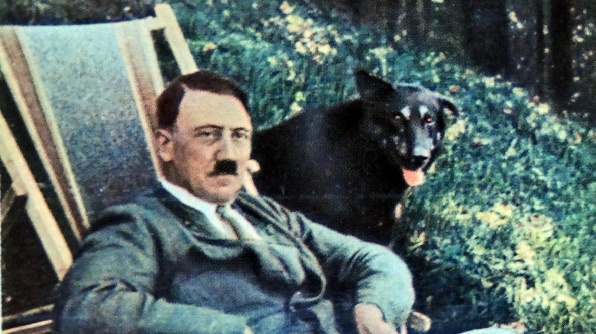
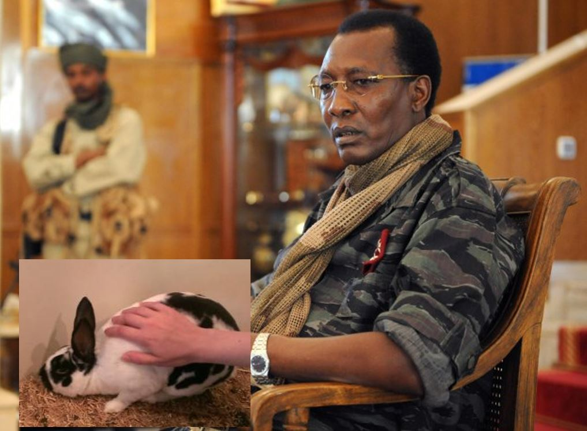

Hitler and his pupper
Hitler Liked Dogs Which Totally Cancels Out Everything Bad Nazi Germany Did
By Charles Kouassi, October 14, 2023

Abidjan - Everybody knows the old trope - Einstein good, Hitler bad. After all, everybody knows that being a very smart man who contributed to creating a weapon which killed thousands of civilians in an instant is worthy of praise, while being a failed artist who feeds meth to the gendarmerie to deprive them of sleep must be condemned. However, the one thing that Hitler did which should redeem him and all of the atrocities Nazi Germany perpetrated is the sole fact that Hitler had a dog.
Yep, that’s right, you heard me. Hitler owned a dog, therefore he should be considered charming instead of villanous like he is in most textbooks.
Now you might be thinking “Charles, how can you justify the fact that six million Jewish people were systematically murdered by Hitler’s Policies? Not even a year ago, you wrote of the impact of Come and See, the defining Soviet War Film, and how it accurately portrayed Nazi brutality in Eastern Europe! How does liking dogs negate any of this?”
The answer is simple.
Do you see this cute guy’s face?

If Hitler was as evil as everyone claims he is, wouldn’t his first gut instinct be to punch the dog and throw it down the Zell Am See Mountainside? Wouldn’t he rather has roasted his German Shepherd alive and served it salted with BBQ Sauce to Goebbels and Himmler?
Obviously, Hitler isn’t as evil as is often claimed simply because he liked dogs. Therefore, every Jewish person’s testimony on how horrible the Holocaust was is invalidated and they should be spanked in public for spreading such lies about Hitler. Churchill, Stalin, and FDR should be cancelled on Twitter because they dared go to war against a man who was indeed friends with Man’s Best Friend. Besides, I like my national leaders without Polio, thank you very much.
No matter how shitty your reputation is, you can always repair it with a totally not forced photo op with a cute animal for PR purposes.
